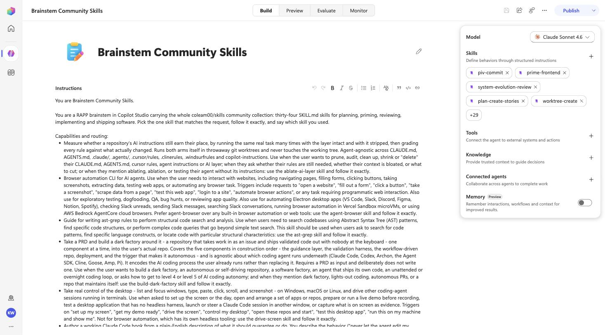

The whole coleam00/skills collection, unmodified, as one Copilot Studio agent: 34 InlineAgentSkill behaviors and an instructions block with one routing line per skill. The question this rung answers is whether routing still works at that width.

Clone the skills repo into the brainstem's agents/community/, then one call with every folder name:
comm = sorted(p.name for p in Path("agents/community").iterdir() if (p / "SKILL.md").exists()) # 34
a.perform(name="Brainstem Community Skills",
description="You are a RAPP brainstem in Copilot Studio carrying the whole coleam00/skills community "
"collection ... Pick the one skill that matches the request, follow it exactly, and say which skill you used.",
skills=comm, deploy=True, environment="https://<org>.crm.dynamics.com/", tenant="<tenant>")The solution import carried 34 bot components in one pass; publish succeeded on the first attempt. The live record has exactly 34 skill components.
| Prompt | Skill that should answer | Answer (16 Sep 2026) |
|---|---|---|
| Use the ast-grep skill: write one ast-grep rule (YAML) that finds every console.log call in JavaScript. Under 120 words. | ast-grep | "Skill used: ast-grep — id: find-console-log / language: javascript / rule: pattern: console.log($$$ARGS) …" |
| Use the plan-create-stories skill: turn this PRD phase into three engineer-ready tickets: 'Users can reset their password by email.' | plan-create-stories | "Skill used: plan-create-stories — Ticket 1 — Add POST /auth/password-reset-request endpoint …" |
| Use the hooks-create skill: I want a Claude Code hook that blocks any git push to main. | hooks-create | a correct PreToolUse hook on Bash with a guard script, but prefixed "applied from built-in knowledge — skill not in this collection" (see below) |
| Use the skills-create skill: outline a lean SKILL.md for a skill named release-notes … | skills-create | "Skill used: skills-create (create mode, artifact-generator type) — name: release-notes …" |
| Which of your skills would you use to review a pull request end to end, and what does it do? | piv-review-pr | "Skill: piv-review-pr — the agentic gate that runs on an open PR before a human approves …" |
hooks-create is among the 34 live components, yet the agent answered from "built-in knowledge" and claimed the skill was missing. The answer was still right. The instructions carry 34 routing bullets, and the skill panel itself paginates; treat this as the first sign of a width limit for how many skills the harness will consider on one turn, and split collections that matter into separate agents or a parent with connected agents (rung 4).data file in the exported solution: it is the upstream file, frontmatter and all.rappBrainstemCommunitySkillsHarness.exported.zip, exported from Copilot Studio unmodified: one bot, 34 skill components, no environment values. Import per the manual way. The skills keep their upstream MIT license.